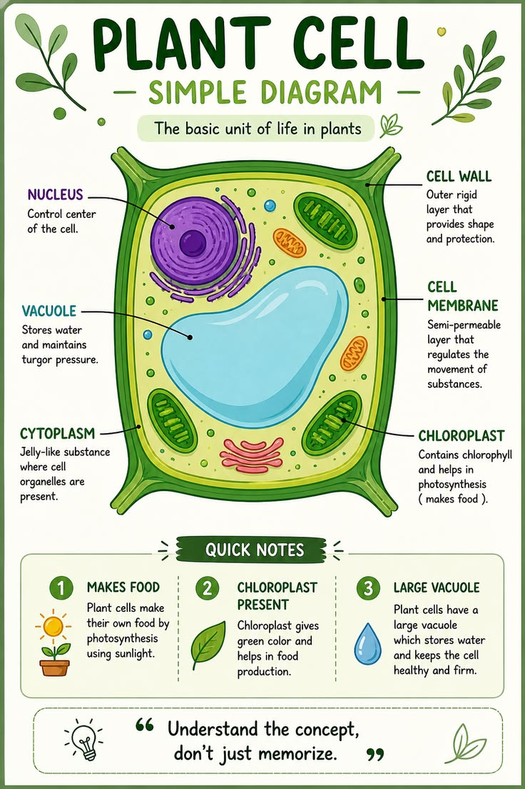
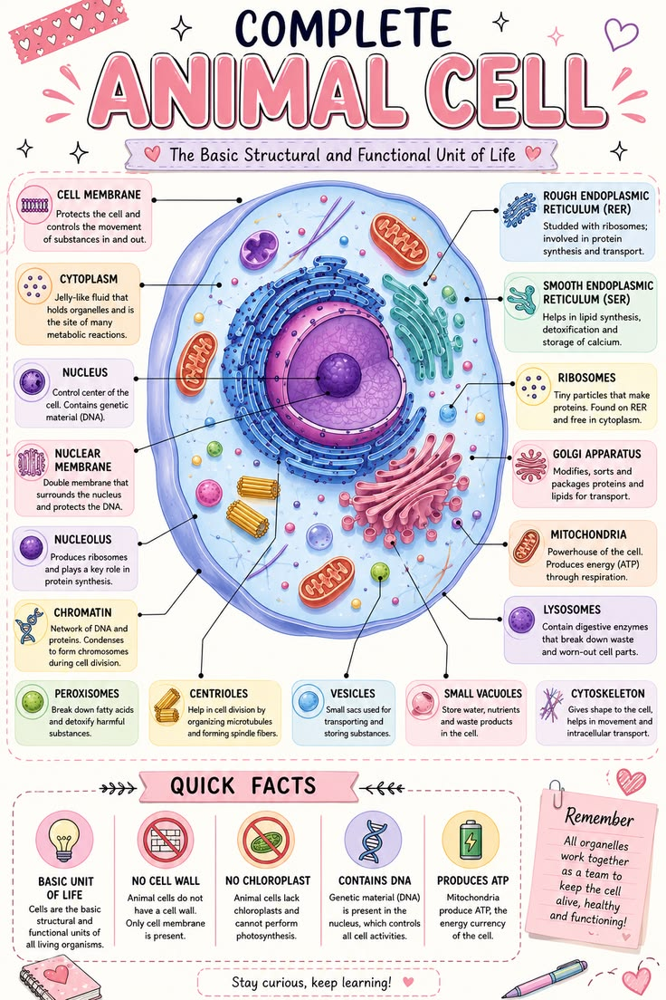

🌱 Plant Cell vs Animal Cell
A side-by-side comparison of plant and animal cells.
🌱 Plant Cell

- ✅ Cell wall present
- ✅ Plastids present
- ✅ Large central vacuole
- ✅ Fixed or rectangular shape
- ✅ Photosynthesis occurs
- ✅ Stores food as starch
- ❌ Centrioles absent
- ❌ Lysosomes are rare
🐾 Animal Cell

- ❌ Cell wall absent
- ❌ Plastids absent
- ✅ Small vacuoles
- ✅ Round or irregular shape
- ❌ Photosynthesis absent
- ✅ Stores food as glycogen
- ✅ Centrioles present
- ✅ Lysosomes numerous
Similarities
- Both possess a plasma membrane.
- Both contain cytoplasm and nucleus.
- Both have mitochondria.
- Both contain ribosomes.
- Both perform respiration.
- Both contain DNA.
📌 Key Points
- Plant cells have a cell wall, plastids and a large central vacuole.
- Animal cells do not have a cell wall or plastids.
- Both plant and animal cells are eukaryotic cells.
- Both contain a nucleus, mitochondria, cytoplasm and ribosomes.
- Plant cells perform photosynthesis, whereas animal cells do not.
📝 Remember
Plant Cell = Cell Wall + Chloroplast + Large Vacuole
Animal Cell = No Cell Wall + No Chloroplast + Centrioles Present
🎯 JKBOSE Exam Point
The following questions are frequently asked in JKBOSE examinations:
- Differentiate between plant and animal cells.
- State any five differences between plant and animal cells.
- Write any four similarities between plant and animal cells.
- Why are plastids absent in animal cells?
- Why is the vacuole larger in plant cells?
❓ Practice Questions
- Differentiate between plant and animal cells.
- Write five similarities between plant and animal cells.
- Why do plant cells contain chloroplasts?
- Which structures are found only in plant cells?
- Which organelles are common to both plant and animal cells?